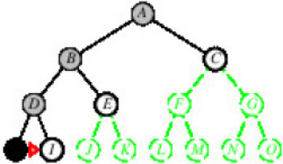

Inteligencia Artificial
Claudio Vaucheret
Búsqueda
Created: 2021-09-16 jue 14:56
Agente Solucionador de Problemas
Agente Solucionador de Problemas
Un agente inteligente orientado a la meta que resuelve los problemas considerando secuencias de acciones que logren su meta.
Agente Solucionador de Problemas
¿Qué tenemos en cuenta al definir esta clase de agentes?
- La Representación del Conocimiento es atómica, es decir cada estado del mundo es indivisible.
- Formulación de la Meta: la meta ayuda a organizar el comportamiento limitando las acciones que necesita considerar.
- Acciones disponibles y los efectos de estas acciones.
- Entorno: observable, discreto (número finito de acciones para elegir), conocido y determínistico(cada acción tiene un efecto único).
- El razonamiento se reduce a la elección de una acción de acuerdo al efecto que tiene.
Busqueda
Resolución de Problemas: Búsqueda
El proceso de buscar una secuencia de acciones que alcance una meta se llama Búsqueda.
Resolución de Problemas: Formulación
Un problema puede ser definido a través de los siguientes componentes:
- Estado Inicial: donde el agente comienza.
- Acciones: descripción de las acciones posibles de las que dispone el agente. Dado un estado \(s\), ACTIONS(s) devuelve las acciones que pueden ser ejecutadas desde \(s\). Decimos que cada una de estas acciones son aplicables a \(s\).
Resolución de Problemas: Formulación
Un problema puede ser definido a través de los siguientes componentes:
- Modelo de Transición y Estados Sucesores: una descripción de lo que cada acción hace.
La función result\((s,a)\) que devuelve el estado que resulta de hacer la acción \(a\) en el estado \(s\) y representa el modelo de transición.
La función del estado sucesor de un estado se define como successor\((x)\) y devuelve un par \((a, s)\), donde \(a\) es la acción aplicada a \(x\) y \(s\) es el estado que se obtiene de aplicar \(a\) a \(x\).
Resolución de Problemas: Formulación
Un problema puede ser definido a través de los siguientes componentes:
- Test de Meta: determina si un estado es un estado meta.
- Función de Costo del Camino: asigna un costo numérico a cada camino. Notamos el costo de una acción \(a\) aplicada al estado \(s\) que lleva al estado \(s^{\prime}\) como \(c(s,a,s^{\prime})\).
Resolución de Problemas: Espacio de Búsqueda
Con el estado inicial, las acciones y la función del estado sucesor se define el espacio de búsqueda de un problema.
El espacio de búsqueda forma un grafo en donde los nodos son los estados y los arcos las acciones aplicables desde ese nodo.
Un camino en un espacio de estados es una secuencia de estados conectados por una secuencia de acciones.
Función del Agente
function Agente-Solucionador(percept) returns an action
static: sec, una secuencia de accion, inicialmente vacia
state, descripcion del estado del mundo actual
goal, una meta, inicialmente nula
problem, una formulación del problema
if seq is empty then
goal <- Formulate-Goal(state)
problem <- Formulate-Problem(state,goal)
seq <- Search(problem)
if seq=failure then return a null action
action <- First(seq)
seq <- Rest(seq)
return action
Ejemplo: Ir a Bucarest
- Situación inicial Nos encontramos en Rumania; exactamente en Arad. El vuelo parte mañana desde Bucarest
- Formular Objetivo Estar en Bucarest
- Formular Problema
- Estados: varias ciudades
- Acciones: conducir entre ciudades
- Encontrar la Solución Secuencia of ciudades, e.g., Arad, Sibiu, Fagaras, Bucarest
Ejemplo (cont)
Formulación de un problema de estado simple
- Un problema se define por cinco items
- Estado Inicial e.g. en Arad
- Acciones e.g. ir de una ciudad a otra.
- Función Sucesor \(S(x) =\) conjunto de pares acción–estado e.g \(S(Arad) = \{\langle Arad\to Zerind, Zerind\rangle, \ldots \}\)
- Test de meta Puede ser explícito, e.g \(x =\) ``en Bucarest'' o implícito, e.g. \(NoDirt(x)\)
- Costo del camino (aditivo) e.g. suma de distancias, números de acciones ejecutadas, etc. \(c(x,a,y)\) es el costo del paso, se asume \(\geq 0\)
Formulación de un problema de estado simple
SOLUCIÓN
Es una secuencia de acciones, que llevan desde el estado incial al estado meta.
Seleccionando un espacio de estados
- El mundo real es demasiado complejo.
- El espacio de estados debe ser abstraído para la resolución de problemas.
- Abstracción
- Estado = conjunto de estados
- Acción = combinación compleja de acciones reales e.g, "Arad \(\to\) Zerind" representa un conjunto complejo de posibles rutas, paradas de descanso, etc..
- Solución = conjunto de caminos reales que son soluciones en el mundo real
¡¡Cada acción abstracta debe ser "más fácil" que el problema original!!
Grafo del espacio de estados de la aspiradora

- Estados suciedad y ubicación del robot (ignorar cantidad de suciedad etc.)
- Acciones \(Left\), \(Right\), \(Suck\), \(NoOp\)
- Test de meta sin suciedad
- Costo del camino 1 por acción (0 para \(NoOp\))
Ejemplo: 8-puzzle

- Estados Ubicaciones de las tejas
- Acciones Mover el blanco a la izquierda, a la derecha, arriba y abajo.
- Test de meta Provisto.
- Costo del camino 1 por movida
Misioneros y Caníbales
- Problema a resolver
A un río llegan tres misioneros y tres caníbales que desean cruzar a la otra orilla, usando una barca que tiene espacio para dos personas como máximo. Si en cualquier momento los caníbales superan en número a los misioneros en cualquier orilla, se produce un desastre (se los comen). Encontrar la secuencia de movimientos en la barca que permite trasladarlos a todos al otro lado de forma segura.

Algoritmos de Búsqueda
- Idea Básica "offline", simular la exploración del espacio de estados generando los sucesores de los estados ya explorados
function Búsqueda-Arbol(problem,strategy) returns an solución o falla
Inicializar el árbol de búsqueda usando el estado inicial de problem
loop do
if no hay candidatos para la expansión then return falla
elegir un nodo hoja expandiendo de acuerdo a la strategy
if el nodo contiene un estado meta then return la solución correspondiente
else expandir el nodo y agregar los nodos resultantes al árbol de búsqueda
end
Ejemplo
Ejemplo
Ejemplo
Implementación: estados vs. nodos
- Estado Es una representació de una configuración física
- Nodo Es una estructura de dato que constituye una parte del áarbol de búsqueda, incluye padre, hijo,profundidad, costo del camino, \(g(x)\)

Árbol de Búsqueda

Implementación Algoritmo de Búsqueda Genérico
| search(\(F_0\)) | \(\leftarrow\) | select(Node,\(F_0\),\(F_1\)), |
| is-goal(Node). | ||
| search(\(F_0\)) | \(\leftarrow\) | select(Node,\(F_0\),\(F_1\)), |
| neighbors(Node,NN), | ||
| add-to-frontier(NN,\(F_1\), \(F_2\)), | ||
| search(\(F_2\)). |
Estrategias de búsqueda
Una estrategia es definida eligiendo el orden de la expansión de los nodos
Estrategias de búsqueda
- Las estrategias son evaluadas según las siguientes dimensiones:
- Completitud Garantizar encontrar una solución siempre y cuando ésta exista.
- Optimalidad Garantiza encontrar siempre la solución de menor costo.
- Complejidad Temporal Número de nodos generados.
- Complejidad Espacial Máximo número de nodos en memoria.
Estrategias de búsqueda
- La complejidad es medida en términos de
- \(b\): máximo factor de ramificación
- \(d\): profundidad de la solución de menor costo
- \(m\): máaxima profundidad del espacio de estados (puede ser \(\infty\))
Estrategias de Búsqueda No Informadas (Ciegas)
- Primero en anchura (Breadth-first search)
- Costo uniforme (Uniform-cost search)
- Primero en profundidad (Depth-first search)
- Profundidad límite (Depth-limited search)
- Iterativa en profundidad (Iterative deepening search)
Primero en Anchura - Breadth-First
- Expande los nodos no expandidos más cercanos.
- Implementación: La frontera es un cola FIFO, i.e., los sucesores nuevos van al final

Primero en Anchura - Breadth-First
- Expande los nodos no expandidos más cercanos.
- Implementación: La frontera es un cola FIFO, i.e., los sucesores nuevos van al final

Primero en Anchura - Breadth-First
- Expande los nodos no expandidos más cercanos.
- Implementación: La frontera es un cola FIFO, i.e., los sucesores nuevos van al final

Primero en Anchura - Breadth-First
- Expande los nodos no expandidos más cercanos.
- Implementación: La frontera es un cola FIFO, i.e., los sucesores nuevos van al final
Breadth-First

Propiedades de Breadth-First
- ¿Completo?: Si (si \(b\) es finito)
- ¿Tiempo?: \(1+b+b^2+b^3+\ldots +b^d. O(b^{d})\), i.e., exp. en \(d\)
- ¿Espacio?: \(O(b^{d+1})\) (conserva todo nodo en memoria)
- ¿Óptimo?: Si, si el costo = 1 por paso. No lo es en general
- Espacio: su gran problema Supongamos que podemos generar 1 millón de nodos por segundo y que ese nodo requiere 1000 bytes. Entonces por ejemplo con un factor de ramificación \(b=10\), a profundidad 10 se requiere de \(10^{10}\) lo que requiere 3 horas y 10 terabytes. A profundidad \(d=16\) son \(10^{16}\), que requiere un tiempo de 350 años y 10 hexabytes. :(
Costo-uniforme
- Expande el nodo no expandido que tenga el menor costo.
- Implementación: La frontera es un cola ordenada por costo del camino, de menor a mayor, equivalente a Breadth-First si los costos son todos iguales.
- ¿Completo?: Si (si el costo es \(\geq \epsilon\))
- ¿Tiempo?: \(O(b^{C^*/\epsilon})\) donde \(C^*\) es el costo de la solución óptima
- ¿Espacio?: \(O(b^{C^*/\epsilon})\) donde \(C^*\) es el costo de la solución óptima
- ¿Óptimo?: Si.Los nodos son expandidos en orden creciente de \(g(n)\).
Primero en Profundidad - Depth-First
- Expande los nodos no expandidos más profundoss.
- Implementación: La frontera es un cola LIFO, i.e., los sucesores nuevos van al frente

Primero en Profundidad - Depth-First
- Expande los nodos no expandidos más profundoss.
- Implementación: La frontera es un cola LIFO, i.e., los sucesores nuevos van al frente
Primero en Profundidad - Depth-First
- Expande los nodos no expandidos más profundoss.
- Implementación: La frontera es un cola LIFO, i.e., los sucesores nuevos van al frente

Primero en Profundidad - Depth-First
- Expande los nodos no expandidos más profundoss.
- Implementación: La frontera es un cola LIFO, i.e., los sucesores nuevos van al frente
Primero en Profundidad - Depth-First
- Expande los nodos no expandidos más profundoss.
- Implementación: La frontera es un cola LIFO, i.e., los sucesores nuevos van al frente

Primero en Profundidad - Depth-First
- Expande los nodos no expandidos más profundoss.
- Implementación: La frontera es un cola LIFO, i.e., los sucesores nuevos van al frente
Primero en Profundidad - Depth-First
- Expande los nodos no expandidos más profundoss.
- Implementación: La frontera es un cola LIFO, i.e., los sucesores nuevos van al frente

Primero en Profundidad - Depth-First
- Expande los nodos no expandidos más profundoss.
- Implementación: La frontera es un cola LIFO, i.e., los sucesores nuevos van al frente

Primero en Profundidad - Depth-First
- Expande los nodos no expandidos más profundoss.
- Implementación: La frontera es un cola LIFO, i.e., los sucesores nuevos van al frente

Primero en Profundidad - Depth-First
- Expande los nodos no expandidos más profundoss.
- Implementación: La frontera es un cola LIFO, i.e., los sucesores nuevos van al frente
Primero en Profundidad - Depth-First
- Expande los nodos no expandidos más profundoss.
- Implementación: La frontera es un cola LIFO, i.e., los sucesores nuevos van al frente

Primero en Profundidad - Depth-First
- Expande los nodos no expandidos más profundoss.
- Implementación: La frontera es un cola LIFO, i.e., los sucesores nuevos van al frente

Espacio de Búsqueda recorrido con depth-first

Propiedades de depth-first
- ¿Completo?: No, falla en espacios de profundidad infinita, espacios con ciclos. Se puede modificar para evitar estados repetidos a lo largo del camino \(\Rightarrow\) completo en espacios finitos.
- ¿Tiempo?: terrible si \(m\) es mucho más grande que \(d\), pero si las soluciones son densas, puede ser mucho más rápido que Breadth-First.
- ¿Espacio?: \(O(bm)\) i.e, ¡¡espacio lineal!! :)
- ¿Óptimo?: No
Búsqueda con Profundidad Limitada - Depth-limited Search
- Igual a depth-first con un límite de profundidad \(l\).
- Esto es, los nodos de profundidad \(l\) no se expanden, aún cuando tengan sucesores.
Búsqueda Iterative Deepening
Búsqueda Iterative Deepening

Búsqueda Iterative Deepening
Búsqueda Iterative Deepening
Propiedades de iterative deepening
- ¿Completo?: Si
- ¿Tiempo?: \((d+1)b^0 + d b^1 + (d-1)b^2 + \ldots + b^d = O(b^d)\)
- ¿Espacio?: \(O(bd)\)
- ¿Óptimo?: Si, si el costo = 1, puede ser modificado para explorar costo uniforme.
IDS funciona mejor porque los otros nodos a la profundidad \(d\) no se expanden.
BFS puede ser modificado para aplicar el test de meta cuando un nodo es generado.
Búsqueda Bidireccional
Búsqueda simultánea desde el estado inicial y el final.
Búsqueda Bidireccional
- Condicionantes:
- Las acciones deben ser reversibles.
- Problemas si hay varias soluciones.
- Debe haber comprobación eficiente del encuentro.
Propiedades de la Búsqueda Bidireccional
- ¿Completo?: Si, si \(b\) es finito y en ambos sentidos se utiliza búsqueda breadth-first.
- ¿Tiempo?: \(O(b^{d/2})\)
- ¿Espacio?: \(O(b^{d/2})\)
- ¿Óptimo?: Si, si el costo es idéntico en cada paso y en ambos sentidos se utiliza búsqueda breadth-first.
Resumen de los algoritmos
| Criterio | Breadth-First | Uniform-Cost | Depth-First | Depth-Limited | Iterative-Deepening | Bidireccional |
|---|---|---|---|---|---|---|
| ¿Completo | Si\(^1\) | Si | No | Si, si \(l>d\) | Si | SI |
| Tiempo | \(b^{d+1}\) | \(b^{C^*/\epsilon}\) | \(b^m\) | \(b^l\) | \(b^d\) | \(b^{d/2}\) |
| Espacio | \(b^{d+1}\) | \(b^{C^*/\epsilon}\) | \(bm\) | \(bl\) | \(bd\) | \(b^{d/2}\) |
| ¿Optimo? | Si\(^1\) | Si | No | No | Si\(^1\) | Si\(^1\) |
1 Óptimo si el costo de cada paso es idéntico.
Estados repetidos
- Los Algoritmos que olvidan su historia están condenados a repetirlos.
- No detectar estados repetidos puede transformar un problema lineal en uno exponencial!!

Conclusiones
- La formulación de problemas requiere usualmente abstraerse de los detalles del mundo real para definir un espacio de estados que pueda ser explorado fácilmente.
- Variedad de estrategias de búsqueda ciegas.
- Iterative deepening usa solo espacio lineal y no mucho más tiempo que los otros algoritmos ciegos.
- Busqueda en Grafos puede ser exponencialmente más eficiente que la búsqueda en árboles.
Created by yjwen.